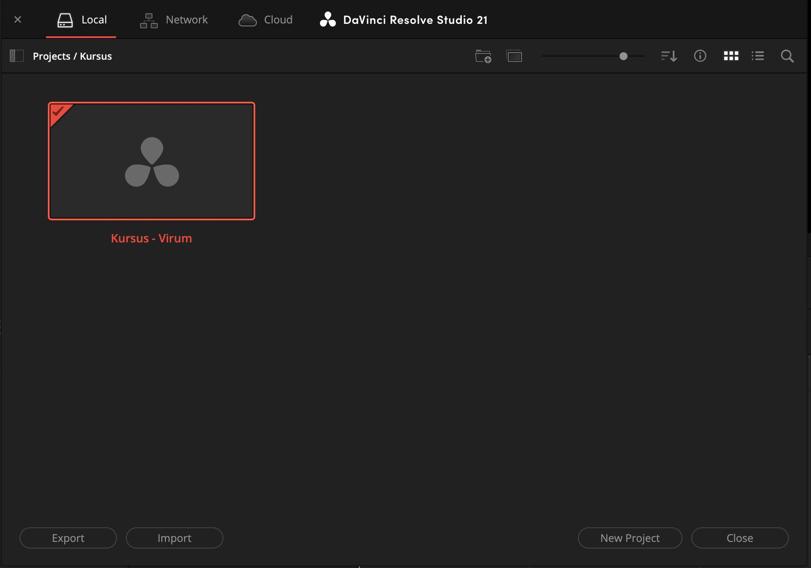
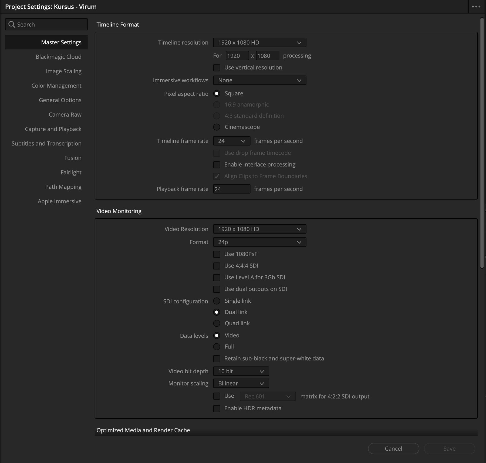
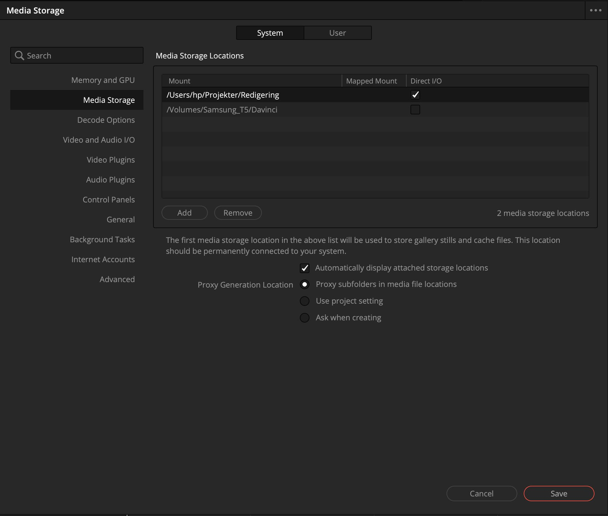
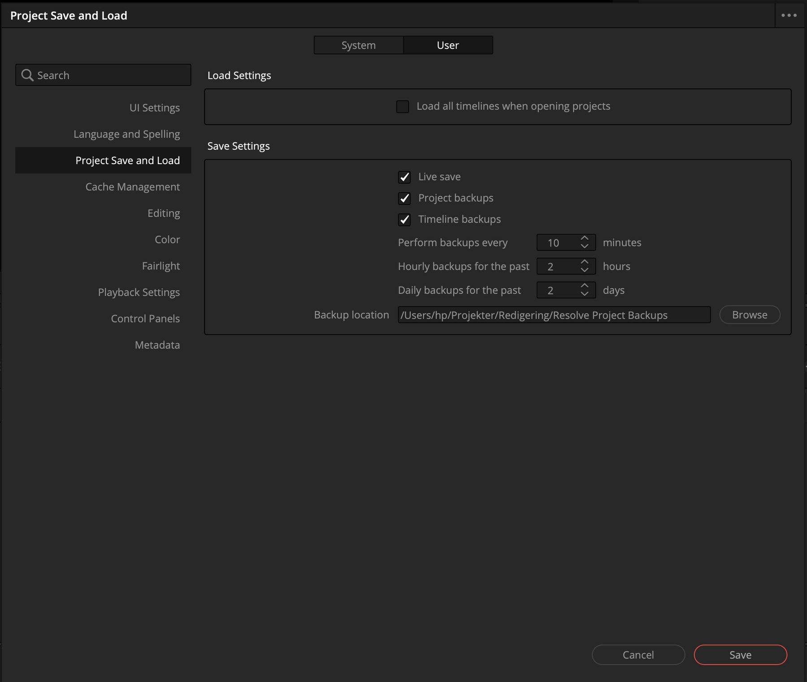
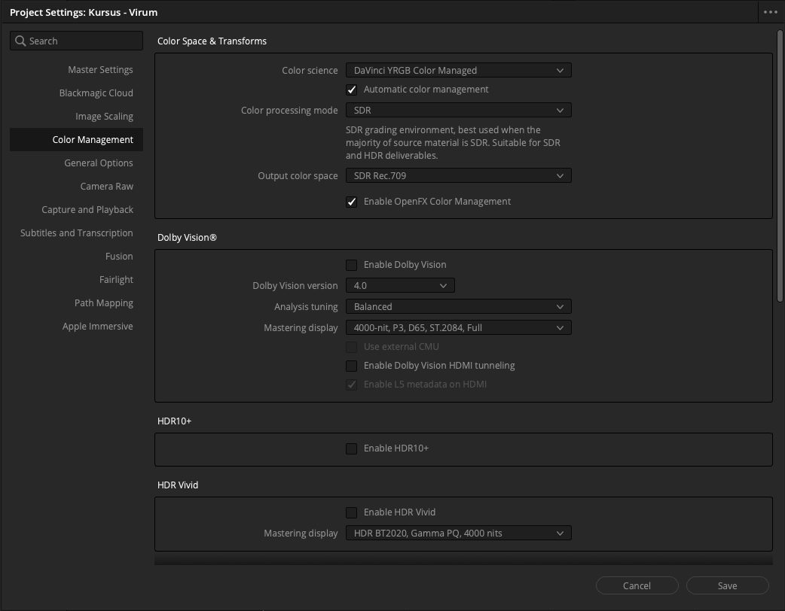
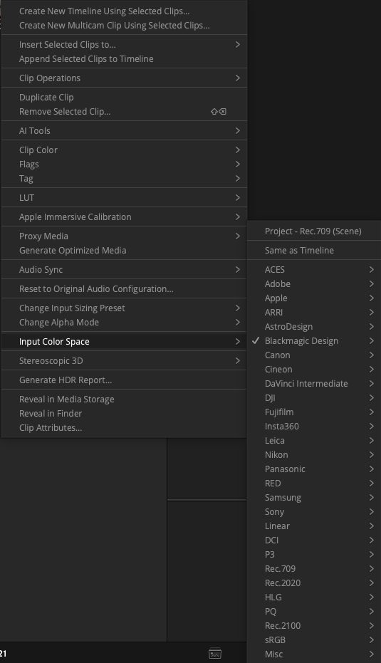

Første del
Hvor er vi henne
Nederst i programmet står en række knapper. Hver af dem skifter ikke bare panelerne rundt. Den skifter reelt til et andet program inde i Resolve. Man klipper ét sted, farvelægger et andet, laver lyd et tredje.
Rækkefølgen er ikke tilfældig. Den følger den vej, en film bliver til. I dag bruger vi tre af dem plus den sidste. Resten kigger vi på efter pausen.

-
Klik på husikonet
Det sidder i nederste højre hjørne. Nu er I i Project Manager. Det er her alle projekter bor, og det er her, I altid kan komme tilbage til.

-
Dobbeltklik på kursusprojektet
Så er I tilbage, hvor I kom fra. Pointen med at gå ud og ind er, at I skal vide, at der er en vej tilbage. Det er den hyppigste panik hos folk, der er nye i programmet: troen på at noget er væk.
Anden del
Opløsning og billedhastighed
Et projekt har en opløsning og en billedhastighed. De to tal beskriver den film, I laver. Ikke de klip, I lægger ind.
Billedhastigheden er den vigtige af de to, for den kan ikke ændres, når der først ligger noget på timelinen. Opløsningen kan man rette bagefter. Det kan billedhastigheden ikke.
-
Åbn projektets indstillinger
Klik på tandhjulet i nederste højre hjørne. Vinduet åbner på Master Settings, og det er den side, vi skal bruge.
-
Tjek de to øverste felter
Timeline resolution skal stå på
1920 x 1080 HD. Timeline frame rate skal stå på23,976. Er de sat rigtigt i forvejen, skal I ikke gøre noget. Kig efter, og gå videre.
De to tal, der beskriver filmen. -
Klik Save
Nede i højre hjørne af vinduet. Det lukker ikke af sig selv.
Timeline frame rate er grå og kan ikke klikkes
Så ligger der allerede noget på en timeline i projektet, og så er billedhastigheden låst. Det er ikke et problem i dag: værdien er sat rigtigt i pakken på forhånd.
Tredje del
Lager, autosave og backup
Resolve gemmer løbende af sig selv. Der er ingen "Gem som", man skal huske hver halve time, sådan som man kender det fra Word.
Til gengæld er der et par ting, man selv skal tage stilling til. De ligger i Preferences, som er delt i to faner: System handler om maskinen, User om dig. Halvdelen af alle leder i den forkerte.
-
Åbn Preferences
Genvejen er Ctrl + , på Windows og Cmd + , på Mac. Den virker begge steder, også når menupunktet ligger forskelligt.
-
Under System: se hvor arbejdsfilerne ligger
Vælg fanen System øverst og Media Storage i venstre side. Den øverste disk i listen er den, Resolve bruger til stillbilleder og midlertidige filer. Den skal være en disk, der altid er tilsluttet. Ikke en ekstern, I tager med jer.

Ringen er fanen, folk overser. Rammen er disklisten: den øverste vinder. -
Under User: slå backup til
Skift til fanen User og vælg Project Save and Load. Der skal være flueben ved alle tre: Live save gemmer løbende, mens Project backups og Timeline backups gemmer versioner tilbage i tiden. Det er dem, der redder en, når noget går galt.

Samme fanerække, den anden fane. Tre flueben. -
Klik Save
Igen nede i højre hjørne.
Fjerde del
Hvorfor billedet ser fladt ud
Nogle kameraer optager med vilje et billede, der ser gråt og fladt ud. Det hedder log, og det gemmer flere detaljer til senere. Ulempen er, at det er kedeligt at klippe i.
Vi retter det nu og ikke senere. Ellers sidder I en time og vænner jer til, at det ser forkert ud. I skal ikke forstå det. I skal sætte to menupunkter.
-
Slå farvestyring til
Åbn projektets indstillinger igen med tandhjulet, og vælg Color Management i venstre side. Sæt Color science til
DaVinci YRGB Color Managed, og klik Save.
-
Fortæl programmet, hvilket kamera der har optaget
Marker alle klip i Media Pool, højreklik på et af dem, og vælg Input Color Space. Billedet skifter foran øjnene på jer.

Input Color Space står ikke i menuen
Så er første trin ikke gemt endnu. Menupunktet findes kun, når projektet står i
en farvestyret tilstand. Gå tilbage til Color Management, tjek at der står
DaVinci YRGB Color Managed, og klik Save. Husk også, at højrekliket
skal lande oven på et markeret klip og ikke i det tomme felt ved siden af.
Til sidst
Tjek dig selv
Det er ikke en prøve, og der er ingen der ser svarene. Men prøv at svare i hovedet, før du folder ud. Det er forsøget på at huske, der får det til at sidde fast, ikke det at læse det igen.
Hvorfor haster det mere at få billedhastigheden rigtig end opløsningen?
Fordi billedhastigheden låser sig, så snart der ligger noget på timelinen. Opløsningen kan du rette bagefter, hvis du opdager at den er forkert. Det kan billedhastigheden ikke.
Du leder efter Media Storage og kan ikke finde det. Hvilken fane står du sandsynligvis i?
User. Media Storage ligger under System, fordi det handler om maskinen og ikke om dig. De to faner ligner hinanden, og det er den hyppigste omvej.
Projektet er væk fra skærmen, og du aner ikke hvor det blev af. Hvad gør du?
Klikker på husikonet i nederste højre hjørne. Det fører til Project Manager, hvor alle projekter bor, og dit ligger der stadig.
Hvorfor retter vi det grå, flade billede med det samme i stedet for til sidst?
Fordi man ellers klipper en hel formiddag i et billede, der ser forkert ud, og vænner sig til det. Beslutninger om hvad der er lyst og mørkt bliver truffet undervejs, og de bliver forkerte.
Input Color Space står ikke i højrekliksmenuen. Hvad mangler du?
At slå farvestyringen til og gemme. Menupunktet findes kun, når projektet står i en farvestyret tilstand. Tjek også at højrekliket lander oven på et markeret klip og ikke i det tomme felt ved siden af.